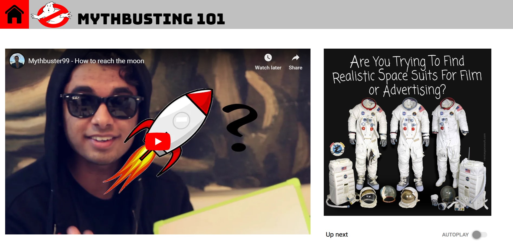
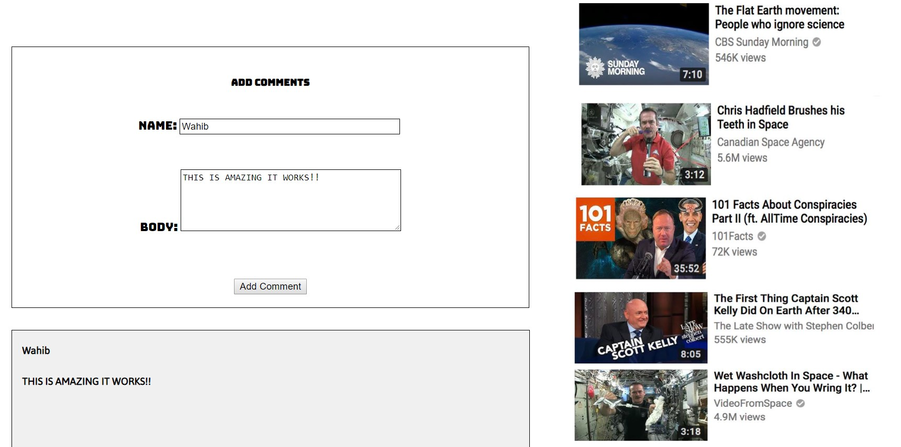

The video project aims to take the viewer on a humorous and cheesy journey full of sarcastic comments, in which the viewer gets an idea on how it is now possible to reach the moon in three easy steps. The aim of the video is to subtly yet funnily convey the idea of a 'fake' moon landing. The intro was meant to invoke curiosity within the viewer as to what follows next in the video, which is taken further by the starting of step 1 where the problem we are dealing with is visualized via drawings of the Earth and the moon. Things take an interesting turn from there when an extremely interesting spacesuit is revealed, and the steps that follow expose how the process of going to the moon can actually be accomplished without physically going into space. The video was inspired by NASA's moon landing in the 1969 and the numerous controversies surrounding the event, claiming that the moon landing was fake.
On our first meeting we decided that we were going with the third prompt of the assignment. However, we wanted to do something unusual, and Mai was really interested using the green screen. During our brainstorming session where we all were randomly throwing out ideas, Omar was the one who pointed the moon landing controversy. And so, we all decided to pursue this idea. The tasks were divided into three categories: acting, editing, and web development. I was handed over the responsibility to act, Omar chose editing, and Mai and I were both in charge of the web development. Once I finalized the script, Omar and I went to the costume shop to get a 'believable astronaut costume'. After a lot of speculation and improvisation, we picked several pieces and combined them to form a costume, and subsequently completed our first shot at the green screen room. The rest of the shooting was done the next day during class in Mai's room, which took us approximately 2 and a half hours. After the filming was completed, Omar wanted to start editing only to realize at 2 a.m in the morning that the memory card was empty and he had no clue where our clips went. The next day, Omar comes up to me, all stressed up. "I would have no hope if I were you", said Omar. "Did you check both memory cards?", I asked. "THERE'S A SECOND MEMORY CARD?!?!?!", Omar shouted. Turns out he was inserting the wrong SD card. After all our clips were discovered, Omar started editing on Adobe Premiere as well as AfterEffects, while Mai and I started working on the website. Mai had a basic prototype of the website, however, her code was too complicated for me to understand and work on. Using the same logic, I rewrote the code from scratch. The idea was to build a webpage similar to that of YouTube, which I successfully implemented. To add to the interactivity, a subscribe button, the GoFundMe link, and the comments section was added to the website. I used basic JavaScript, JQuery, and CSS attributes to achieve this. However, once opened on a different computer, the positioning wasn't how it was intended to look like, which I later fixed using the percentages attribute of absolute positioning in CSS. In order to add to the theme of the webpage, the spacesuit advertisement was added on the left of the video and below that screenshots of video suggestions from YouTube were incorporated, with each screenshot adhering to our overall theme of controversy, space, and unusualness. All in all, the webpage complements the story of the video and gives the viewer sufficient web interactivity for the user to become engrossed in the overall experience.
'How to reach the moon' is my first ever take on film production and integrating video into website which adds to the storytelling aspect of the video. I got exposed to a variety of filming techniques which were previosuly unknown to me such as framing, ISO, aspect ratio, and lighting. The opportunity to work with the film equipment (setting up the camera and tripod) as well the green screen was unique. The overall concept that we were trying to achieve was implemented effectively, with the website conveying the same theme as the video through titles, advertisements, and suggested video screenshots on the left. Although there could have been some minor improvements in filming such as improving the lighting, adding more content to each of the three steps, and changing settings for the scenes, however in the interest of time this is the best we could have achieved. Therefore, the goals we had set for this video project were successfully met and hence, I personally am content with the work we put in as well as with the resulting outcome.